expect(received).toBeTruthy() Received: undefined
blocked
Normal Workflows entry is available.
Expected: Existing workspace controls
Actual: Normal Workflows entry is available.
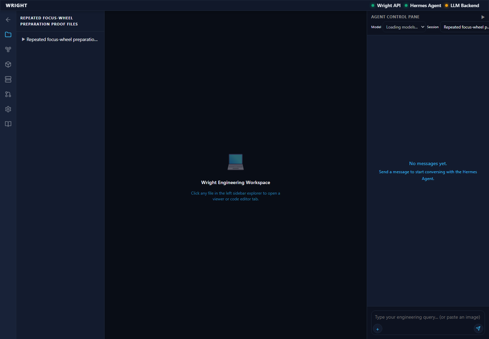
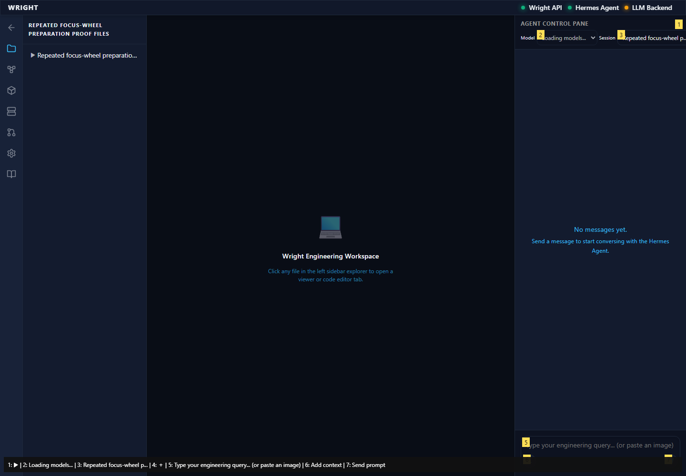
The existing editor and file controls are visible.
Expected: Refined editor in the workspace
Actual: The existing editor and file controls are visible.
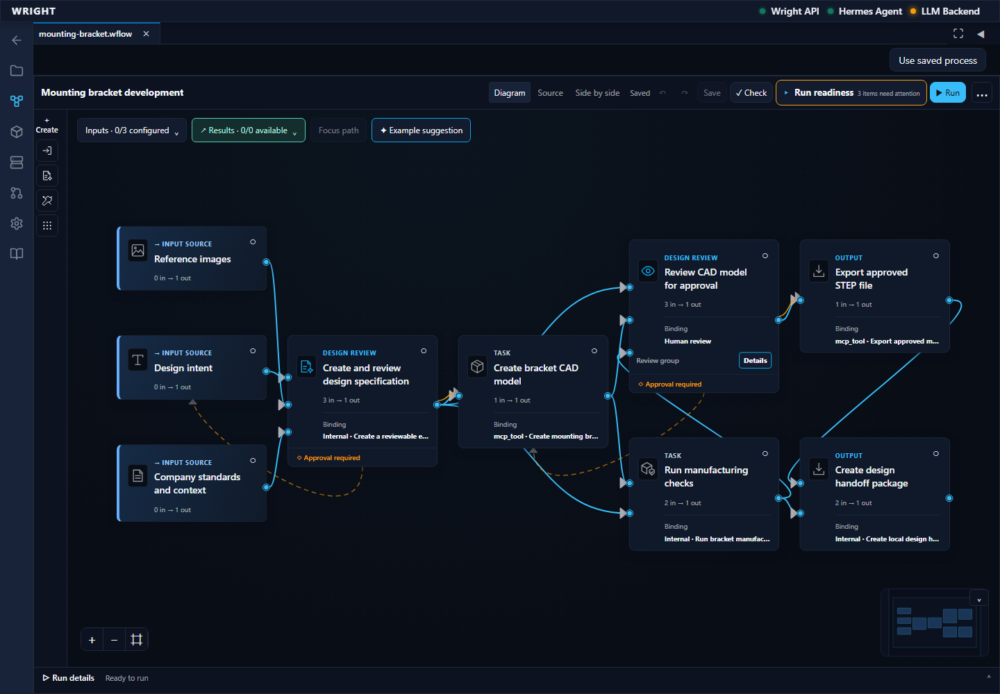
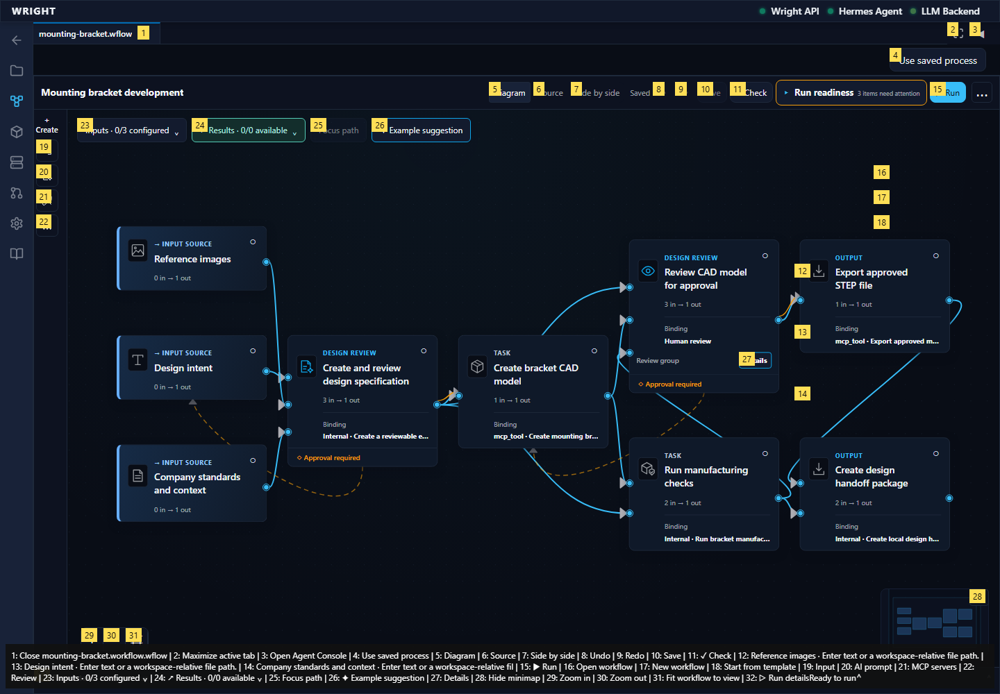
The fresh original-input source is available through normal file selection.
Expected: Named accepted source listed
Actual: The fresh original-input source is available through normal file selection.
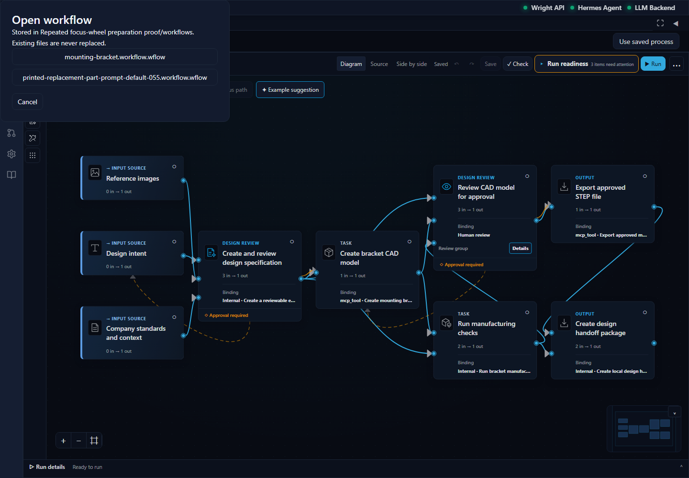
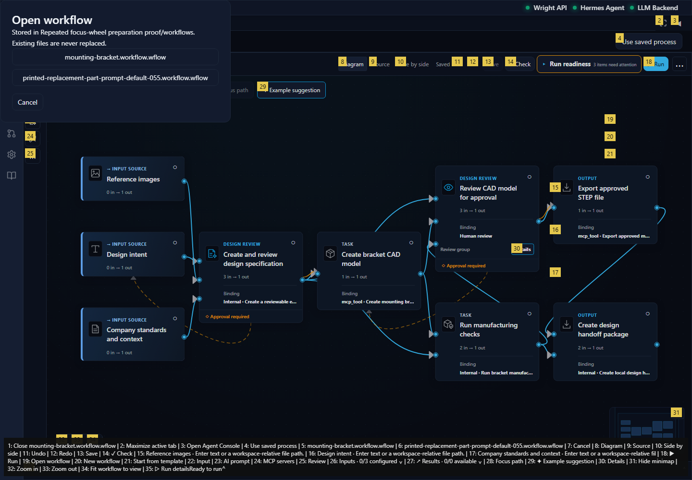
The existing diagram opens on the exact accepted source.
Expected: Accepted source opens without execution
Actual: The existing diagram opens on the exact accepted source.
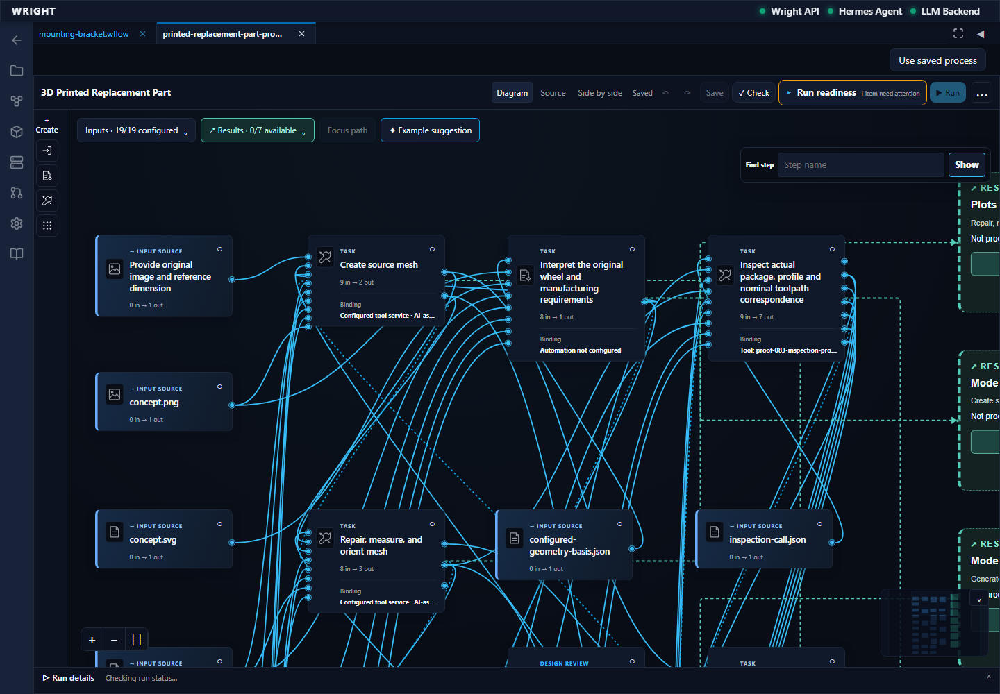
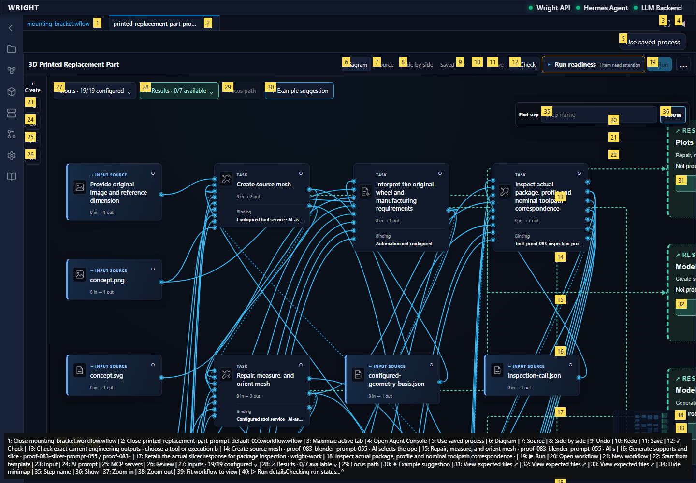
Original configured inputs are presented in the common workspace tab. The browser starts no process.
Expected: Common inputs without generating an app
Actual: Original configured inputs are presented in the common workspace tab. The browser starts no process.
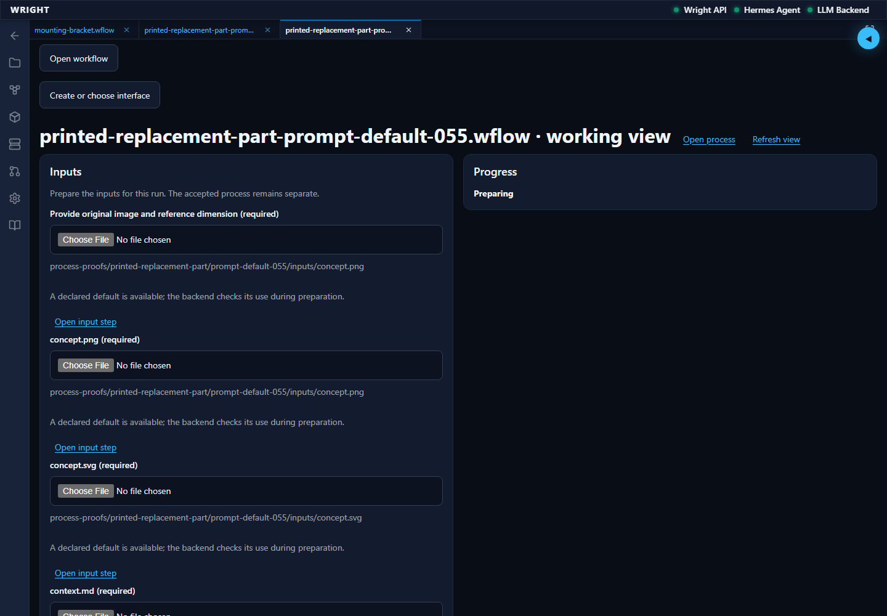
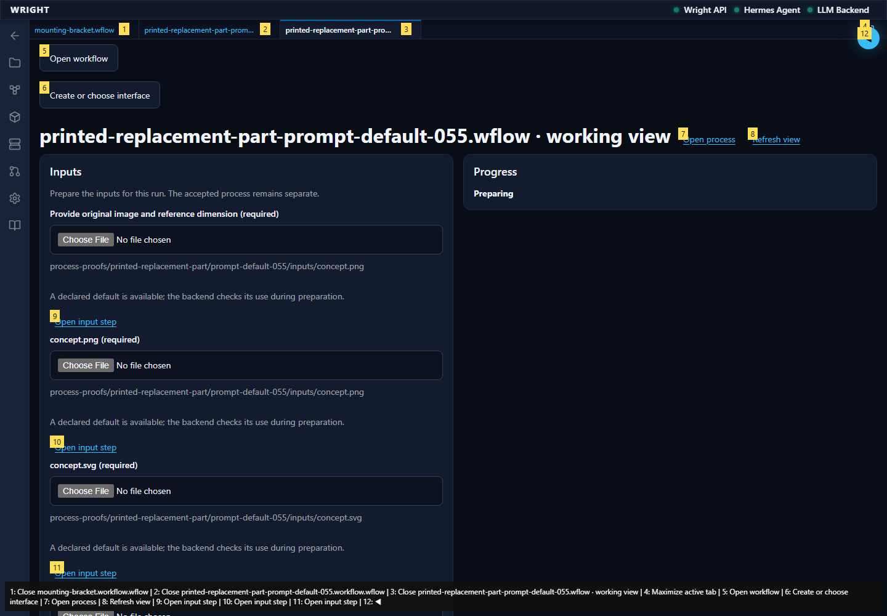
expect(received).toBeTruthy() Received: undefined
Expected: The declared next behavior
Actual: expect(received).toBeTruthy() Received: undefined
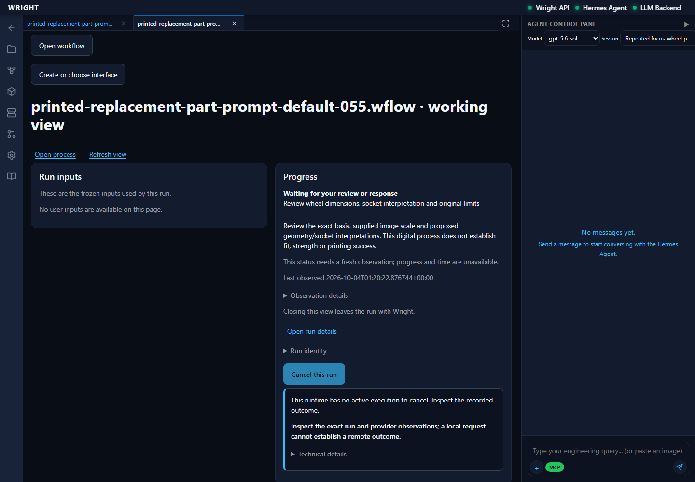
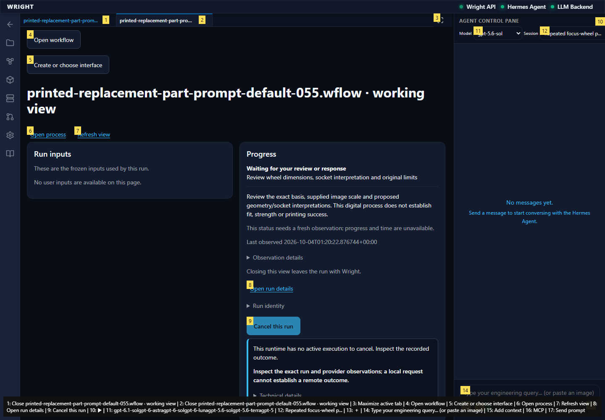